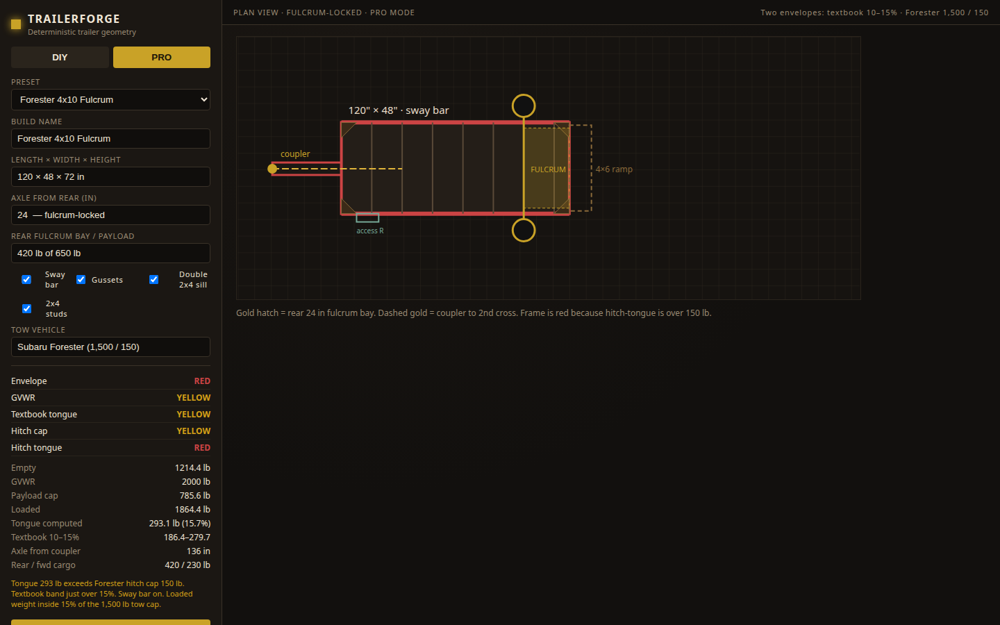
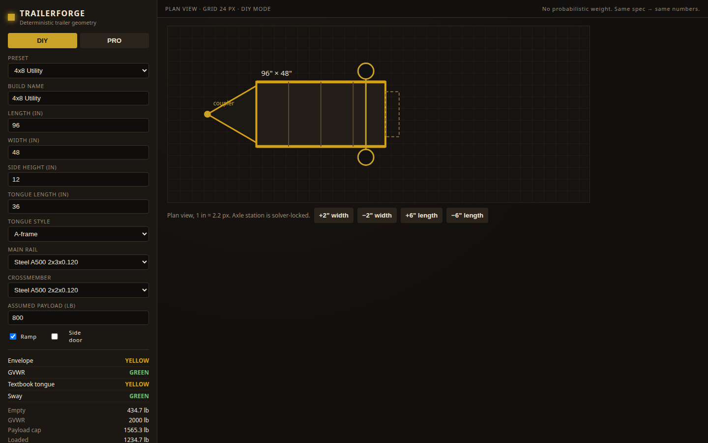
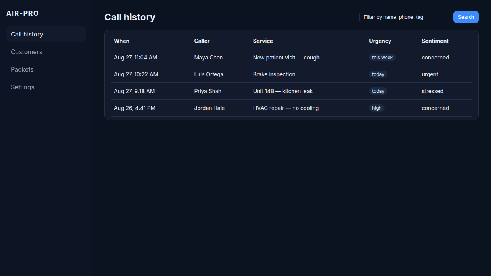
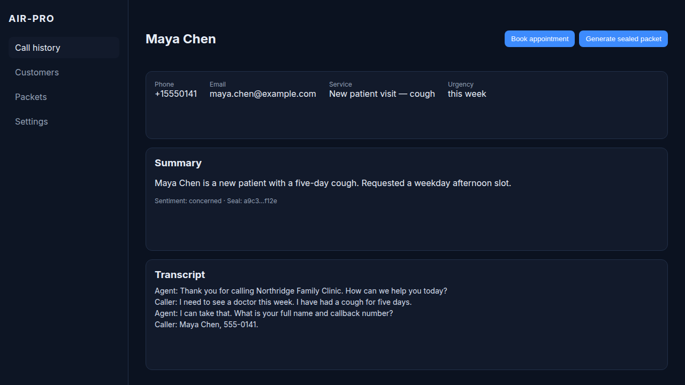
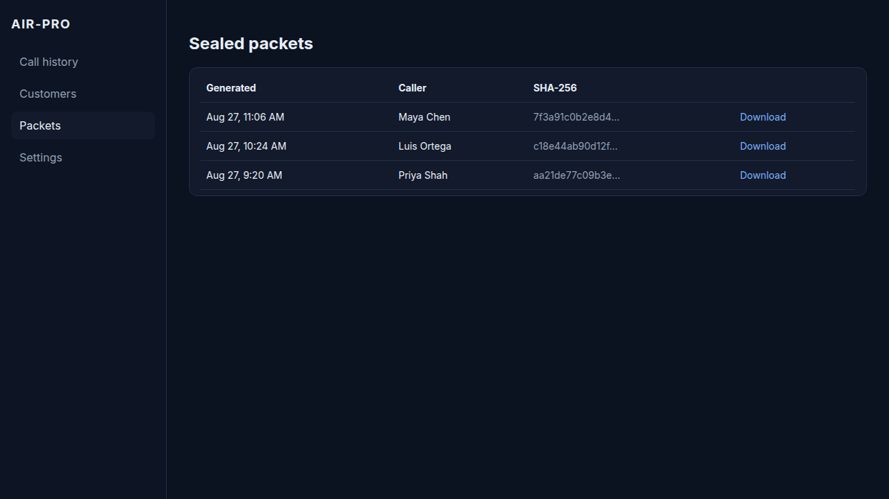

Planner
TrailerForge
Deterministic trailer geometry, weight, and cut list. DIY canvas or Pro rail. Same spec reprints the same blueprint.
Workshop tools
Two commercial tools from the same shop. They share a habit: replayable numbers and sealed packets. They are not Brad-Core OS. They do not run the Quad-Core vote.
Planner
Deterministic trailer geometry, weight, and cut list. DIY canvas or Pro rail. Same spec reprints the same blueprint.
Reception
Answers the line, runs structured intake, stores the transcript, and emits a SHA-256 sealed PDF packet.
Brad-Core OS is the sealed guardian. These two are tools you can run this week. Do not treat a tongue-weight flag or a clinic packet as a Class-5 aerospace result.
TrailerForge 1.0
Closed-form weight and station math. No sampled simulator. Textbook tongue band 10–15% (ideal 12%). Hitch envelope is a second band so a light SUV can disagree with the textbook on purpose.

Plan-view canvas. Length, width, axle, ramp, doors. Geometry is derived from the spec so the drawing cannot drift from the numbers.
Same engine, exposed rail: empty / GVWR / payload, tongue, hitch cap, span utilization, sway-bar length, BOM, blueprint PDF.
4×8 utility, 6×10 enclosed, off-road expedition, Forester 4×10 fulcrum. The last one is a real tow envelope: 1,500 / 150.
It is not a PE stamp, a weld procedure, or a scale. GREEN means inside the amateur thresholds we locked. Weigh the finished trailer.

AIR-Pro
Built for clinics, shops, and property desks that lose the first five minutes of a caller. The intake ladder is deterministic. Language sits behind a swappable LLM adapter. The packet hash is of the file bytes.

Twilio-compatible. Provider is an interface. Mock adapter for a desk demo without a live number.
Structured turns, transcript, customer record. Replay audio with the packet when a recording exists.
Branded intake sheet. SHA-256 stored on the packet and in a sibling file. Same inputs, same hash.


Northridge Family Clinic. Desert Line Auto. Cinder & Key Properties. One seeder writes all three.
It is not a clinician. It is not Brad-Core. Language understanding is probabilistic by vendor. The state machine and the packet seal are not.
Write brad-core@outlook.com. Name the product in the subject. Say whether you want a local Docker walkthrough, a Windows build of TrailerForge, or a clinic / shop / property demo of AIR-Pro. Bradley W. Holmes, Williams, Arizona.